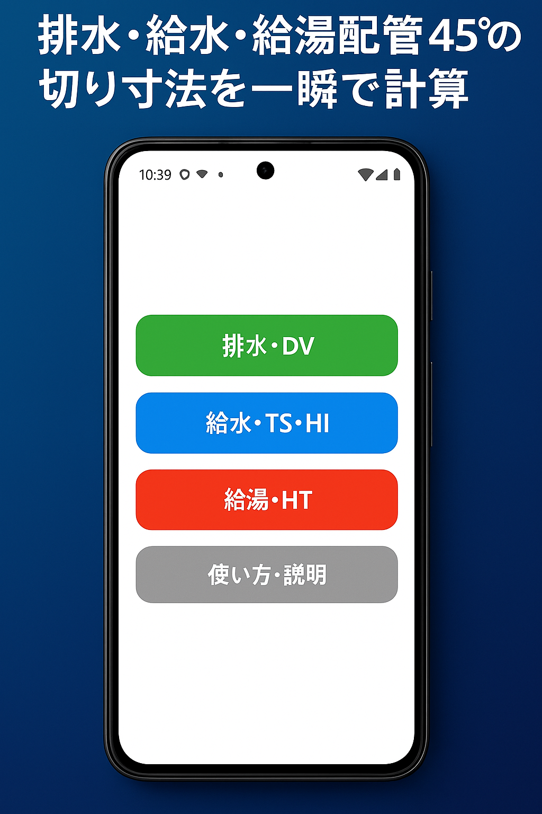
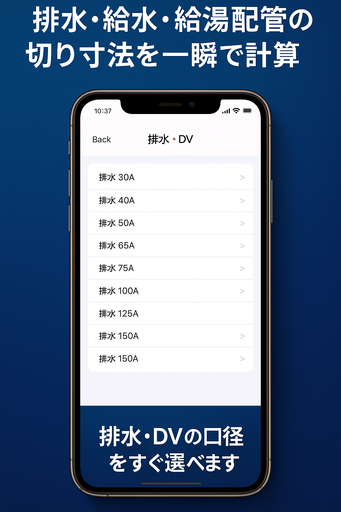
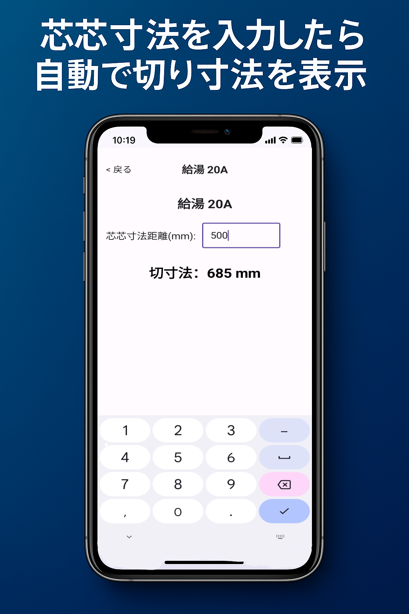

基本の使い方
上から順に操作してください。
1
アプリを開く
「排水・DV」「給水・TS・HI」「給湯・HT」から、計算したい配管を選びます。

2
口径を選ぶ
一覧から使用する口径を選びます。画像は排水・DVの口径選択例です。

3
寸法を入力する
芯芯寸法距離を入力すると、切寸法が画面に表示されます。入力値と選択した口径を必ず確認してください。

計算結果を使う前に
現場条件を必ず確認してください。
芯芯距離と実際の管の切寸法は同じではありません。継手の差し込み・受け・中心寸法は種類、口径、規格、メーカーで異なる場合があります。使用する製品の資料、図面、仕様書と照合してください。
芯芯距離と実際の管の切寸法は同じではありません。継手の差し込み・受け・中心寸法は種類、口径、規格、メーカーで異なる場合があります。使用する製品の資料、図面、仕様書と照合してください。
配管45度計算を詳しく確認
45度の計算方法
√2と1.414、芯芯寸法と切寸法の違いを解説します。
45度エルボの芯芯計算
中心間距離と継手寸法を混同しないための確認事項です。
配管オフセット計算
振り寸法、斜め距離、前進量の幾何学関係を整理します。
よくある質問
入力単位、対応管種、1.414の意味などを確認できます。
言語とサポート
配管45°のよくある質問をご確認ください。解決しない場合はお問い合わせください。